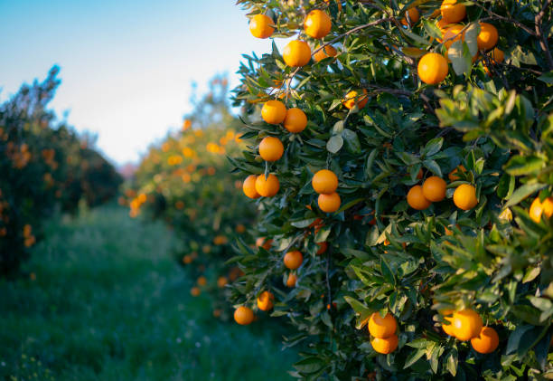

Welcome to Lesotho Farmers Hub!
Find the best local farmers and their fresh products right here in Lesotho!
Farmer Categories
ü•ï Crop Farmers
Fresh vegetables, grains, and seasonal crops
- Maize Farmers
- Vegetable Growers
- Wheat Farmers
- Bean Producers
üêÑ Livestock Farmers
Quality meat, dairy products, and poultry
- Cattle Ranchers
- Dairy Farmers
- Chicken Farmers
- Sheep Farmers
üçé Fruit Farmers
Fresh seasonal fruits and orchards
- Apple Orchards
- Peach Growers
- Berry Farmers
- Citrus Farmers
üåø Organic Farmers
Chemical-free, natural products
- Organic Vegetables
- Natural Herbs
- Free-range Products
Our Partner Businesses
Reabetsoe's Farm
Specialty: Organic Vegetables
Products: Tomatoes (M50/kg), Spinach (M25/bunch), Carrots (M30/kg)
Location: Maseru
Contact: 5812-3456
Thabo's Dairy Farm
Specialty: Fresh Dairy Products
Products: Fresh Milk (M15/liter), Cheese (M80/kg), Butter (M120/kg)
Location: Berea
Contact: 5834-7890
Teboho's Chicken Farm

Specialty: Poultry Products
Products: Fresh Chicken (M75/kg), Eggs (M3 each), Free-range Chicken (M95/kg)
Location: Leribe
Contact: 5856-1234
Lineo's Fruit Garden
Specialty: Seasonal Fruits
Products: Apples (M40/kg), Peaches (M55/kg), Plums (M60/kg)
Location: Mafeteng
Contact: 5878-5678
Katleho's Grain Farm
Specialty: Grains and Cereals
Products: Maize (M25/kg), Wheat (M30/kg), Sorghum (M35/kg)
Location: Mohale's Hoek
Contact: 5890-9012
About Lesotho Hub
Our Mission
The Lesotho Farmers Hub was created to connect local farmers directly with customers throughout Lesotho. We believe in supporting our local agricultural community and providing fresh, quality products to families across the country.
What We Do
Our platform serves as a marketplace where:
- Farmers can advertise their products and reach more customers
- Customers can find fresh, local produce at fair prices
- Communities can support local agriculture
- Small-scale farmers can grow their businesses
Why Choose Local?
When you buy from local farmers through our hub, you:
- Get the freshest products straight from the farm
- Support Lesotho's economy and local families
- Reduce transportation costs and environmental impact
- Build stronger community connections
- Know exactly where your food comes from
Our Story
Founded in 2025, the Lesotho Farmers Hub started as a small initiative to help farmers in rural areas connect with urban customers. Today, we proudly serve farmers and customers across all districts of Lesotho, promoting sustainable agriculture and food security for our nation.
Contact Us
Get in Touch
Have questions or want to submit a claim? We're here to help!
üìç Address: Kingsway Street, Maseru 100, Lesotho
üìû Phone: +266 2234-5678
üìß Email: info@lesothofarmershub.ls
üïí Working Hours: Monday - Friday: 8:00 AM - 5:00 PM
Submit a Claim Form
Business Tips for Farmers
üí° Tip #1: Quality First
Always prioritize the quality of your products. Fresh, well-maintained produce builds customer trust and leads to repeat business. Harvest at the right time and store properly.
üí° Tip #2: Fair Pricing
Research market prices regularly. Price your products competitively but don't undervalue your hard work. Consider your costs: seeds, labor, transportation, and a fair profit margin.
üí° Tip #3: Build Relationships
Get to know your customers personally. Remember their preferences, be reliable with delivery times, and communicate clearly about your products and availability.
üí° Tip #4: Diversify Your Products
Don't put all your eggs in one basket! Grow different crops or raise different animals to spread risk and provide customers with variety throughout the seasons.
üí° Tip #5: Use Social Media
Take photos of your products and share them on WhatsApp or Facebook. Show your farming process - customers love to see where their food comes from!
üí° Tip #6: Plan for Seasons
Plan your planting and harvesting schedule carefully. Know when demand is highest for different products and plan accordingly to maximize profits.
üí° Tip #7: Keep Records
Write down your expenses, sales, and profits. This helps you understand which products are most profitable and plan for the future.
üí° Tip #8: Join Farmer Groups
Connect with other farmers to share knowledge, bulk-buy supplies, and support each other. There's strength in numbers!
üí° Tip #9: Customer Service Matters
Be polite, helpful, and responsive to customer questions and concerns. Good customer service can set you apart from competitors.
üí° Tip #10: Stay Learning
Always look for new farming techniques, attend workshops, and learn from successful farmers. The agricultural world is always evolving!